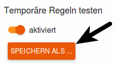

eBlocker Help > Wissensdatenbank > Anwendungsmöglichkeiten
Mit der manuellen HTTPS Diagnose können Sie selbstständig untersuchen, warum gegebenenfalls einzelne Apps im Zusammenhang mit dem eBlocker und der aktivierten eBlocker HTTPS Funktion nicht funktionieren. Anschließend können Sie mit der Definition einer Ausnahmeregel Probleme mit einzelnen Apps selbst beseitigen.
Gehen Sie in die eBlocker „Einstellungen > Menü HTTPS“ und wählen das Gerät, auf dem Sie die App verwenden wollen. Nun wählen Sie die Dauer der Aufzeichnung und die maximale Größe der Aufzeichnungsdatei aus. Meist reichen die schon vorgewählte Dauer der Aufzeichnung und die maximale Größe der Aufzeichnungsdatei vollkommen aus.
Mit einem Klick auf den Button „Start“ starten Sie die Aufzeichnung.
Verwenden Sie die App wie gewohnt und testen Sie insbesondere die Funktionen, die nicht mit dem eBlocker kompatibel zu sein scheinen.
Stoppen Sie mit einem Klick auf den Button „Stopp“ die Aufzeichnung. Nach wenigen Sekunden wird der eBlocker Ihnen eine Liste an Verbindungen anzeigen.

Nicht alle aufgelisteten Verbindungen stammen von der App, da der eBlocker alle aktuellen Verbindungen des Gerätes aufzeichnet. Verbindungen welche der eBlocker nicht zulässt werden mit „eBlocker aktiv“ angezeigt und Verbindungen für die es schon eine Ausnahme gibt werden mit dem Namen der Ausnahmeregel angezeigt.
Tipp: Meist erkennen Sie die blockierten Domains an deren Namen in der Aufzeichnung. Der Name der Domain steht oft in Verbindung mit der App oder dem Hersteller der App.
Ist der eBlocker für eine Verbindung aktiv, können Sie aussuchen, ob der eBlocker nun für die gefundene Subdomain, die Domain oder ggf. für die IP-Adresse der Domain deaktiviert werden soll.

Sie können jetzt Ihre neuen Einstellungen temporär testen oder Speichern. Um Ihre neue Ausnahmeregel zu speichern klicken Sie auf den Button „Speichern als“.

Wählen Sie einen sprechenden Namen aus und geben Sie gegebenenfalls noch eine kurze Beschreibung ein. Nach den dort enthaltenen Begriffen kann die Liste der vertrauenswürdigen Apps in Zukunft durchsucht werden. Die von Ihnen freigegebenen Subdomains, Domains, oder IP-Adressen stehen schon in den betreffenden Feldern.

Wenn Sie nun auf den Button „Speichern“ klicken, wird Ihre neue Ausnahmeregel gespeichert. Ihre Ausnahmeregel ist nun aktiv und in den eBlocker Einstellungen > Menü Apps sichtbar.
Manchmal kann es mehrere Tests benötigen, bis eine App, oder Webseite, mit dem eBlocker läuft.
Beachten Sie bitte auch unsere FAQ‘s.